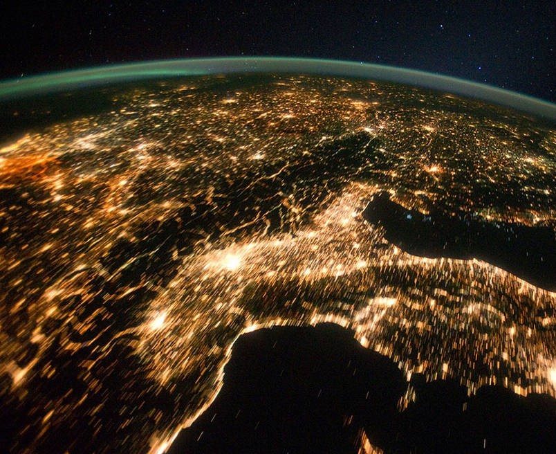
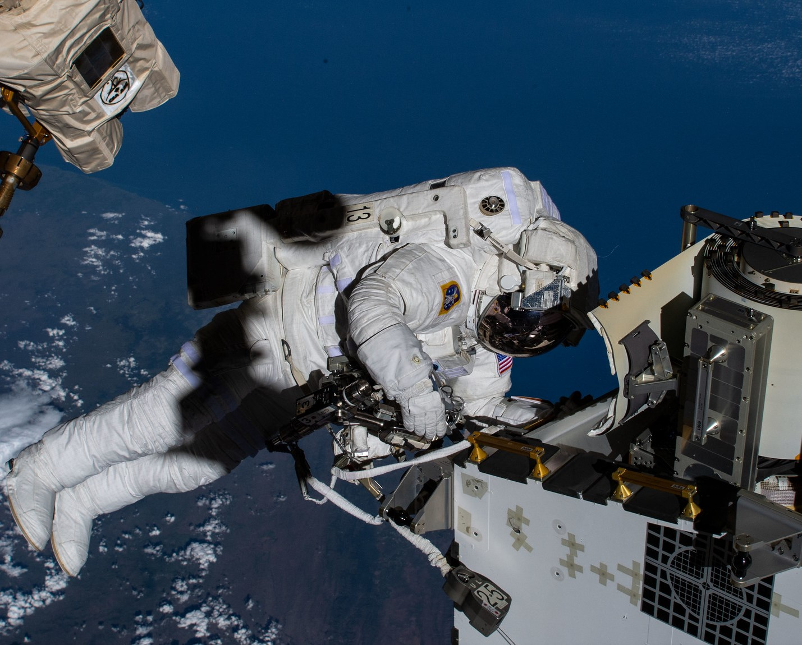
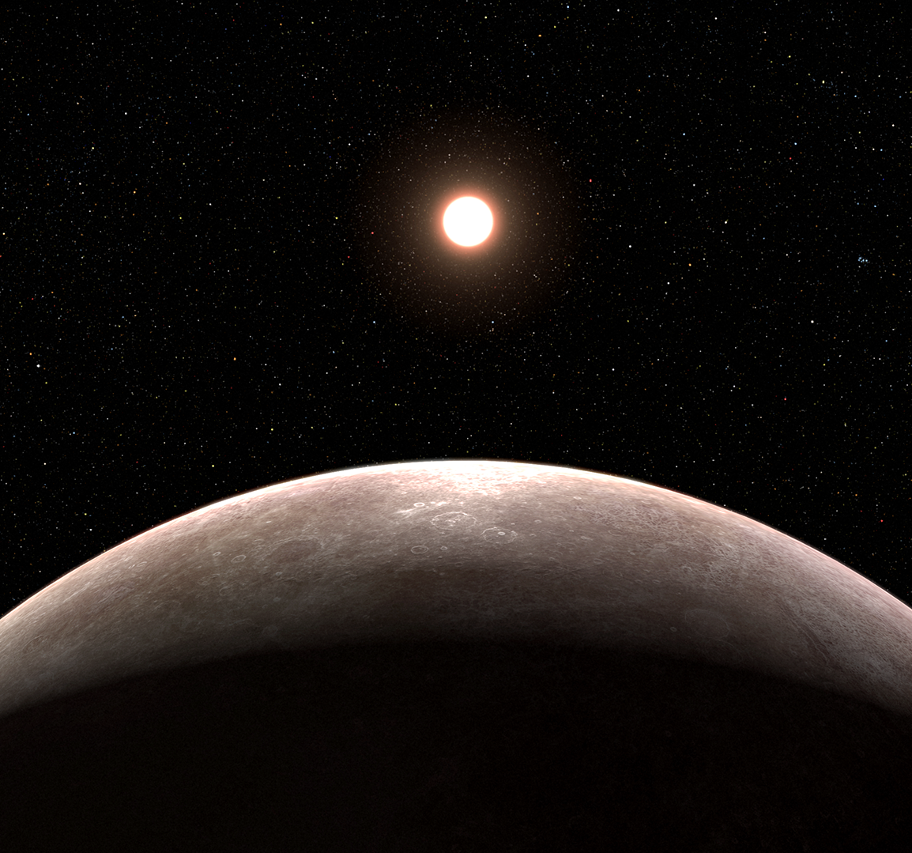
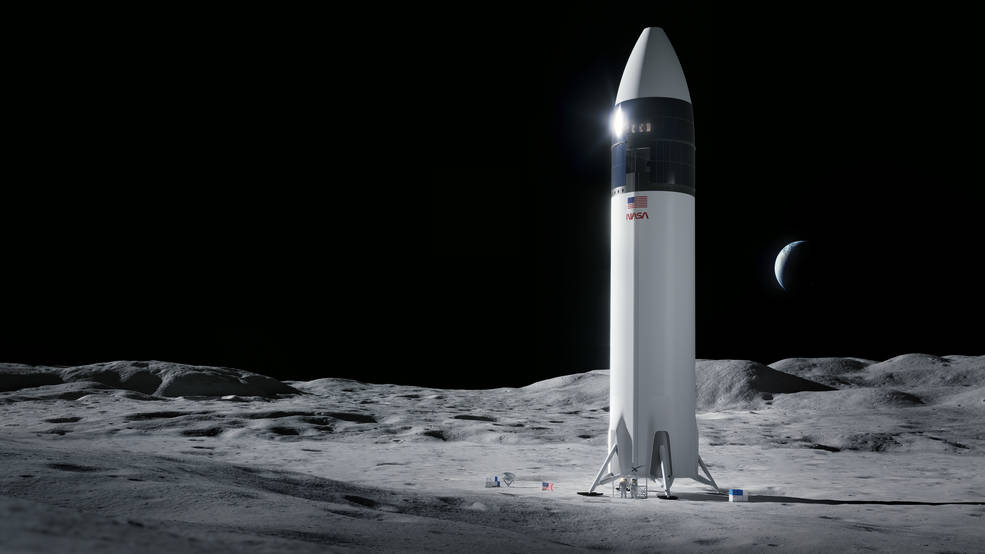

On Dec. 24, 1968, Apollo 8 astronauts Frank Borman, Jim Lovell, and Bill Anders became the first humans to orbit the Moon, and the first to witness the magnificent sight called 'Earthrise.' As the spacecraft was in the process of rotating, Anders took this iconic picture showing Earth rising over the Moon's horizon. In 2018, the International Astronomical Union commemorated the event by naming a 25 mile diameter crater 'Anders' Earthrise.

NASA Space Missions Pinpoint Sources of CO2 Emissions on Earth
A case study involving Europe’s largest coal-fired power plant shows space-based observations can be used to track carbon dioxide emissions – and reductions – at the source.
A duo of Earth-observing missions has enabled researchers to detect and track carbon dioxide (CO2) emission changes from a single facility, using the world’s fifth-largest coal-fired power plant as a test case.

Apollo 8 Astronaut Bill Anders Captures Earthrise

NASA to Provide Coverage of US Spacewalk, Preview News Conference

NASA's Webb Confirms Its First Exoplanet
Researchers confirmed an exoplanet, a planet that orbits another star, using NASA's James Webb Space Telescope for the first time. Formally classified as LHS 475 b, the planet is almost exactly the same size as our own, clocking in at 99% of Earth’s diameter. The research team is led by Kevin Stevenson and Jacob Lustig-Yaeger, both of the Johns Hopkins University Applied Physics Laboratory in Laurel, Maryland.
During their moonwalks, the astronauts will take pictures and video, survey geology, retrieve samples, and collect other data to meet specific scientific objectives. The view from the lunar South Pole region will look very different from the photos taken on Apollo missions in the Moon's equatorial region. The information and materials collected by Artemis III astronauts will increase our understanding of the mysterious South Pole region, the Moon, and our solar system.

Artemis III: NASA's First Human Mission to the Lunar South Pole